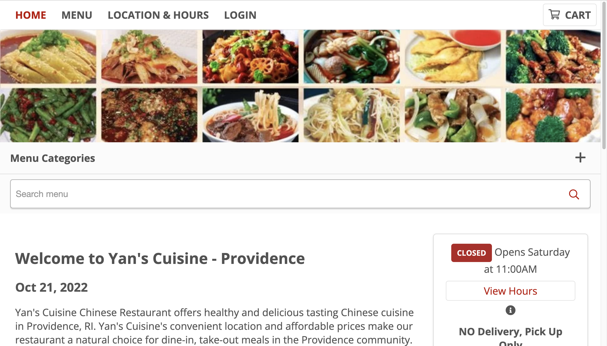
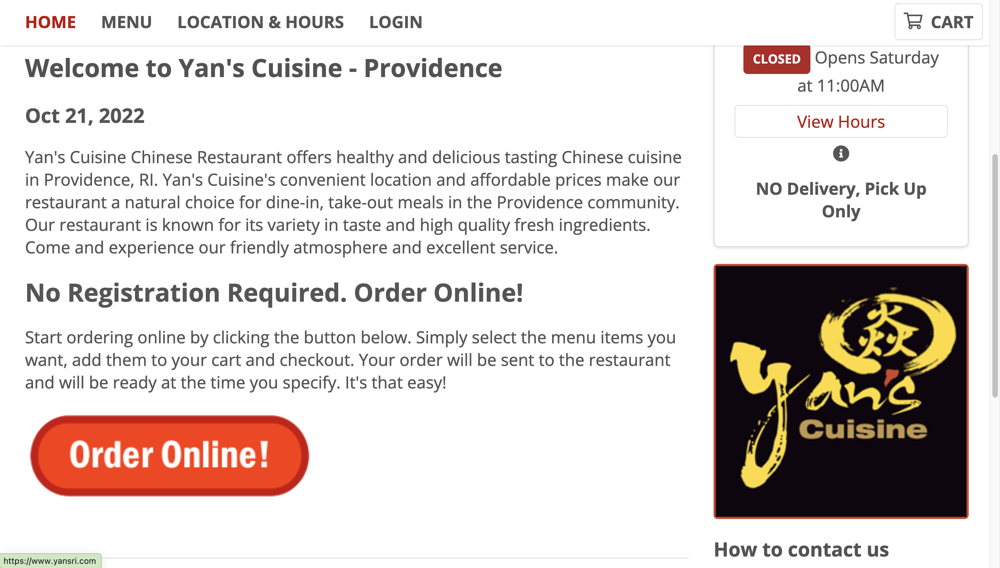
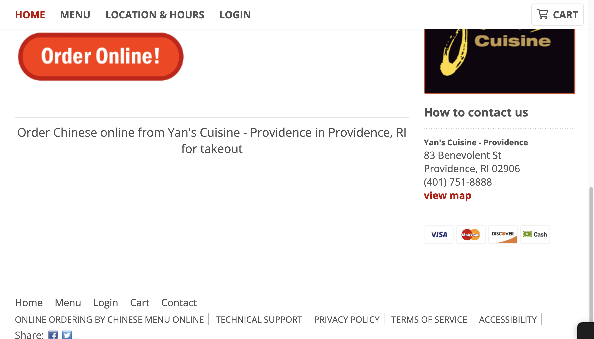
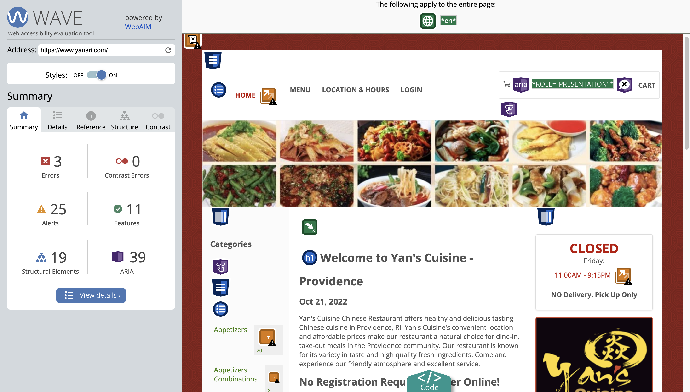
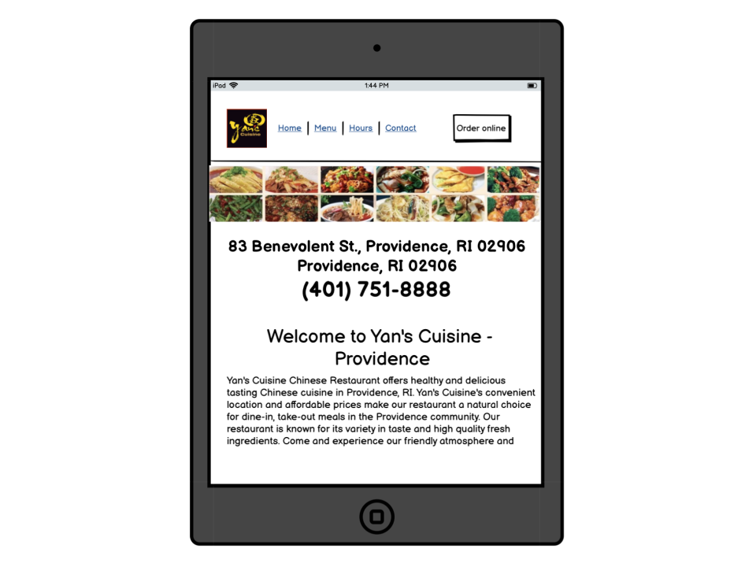
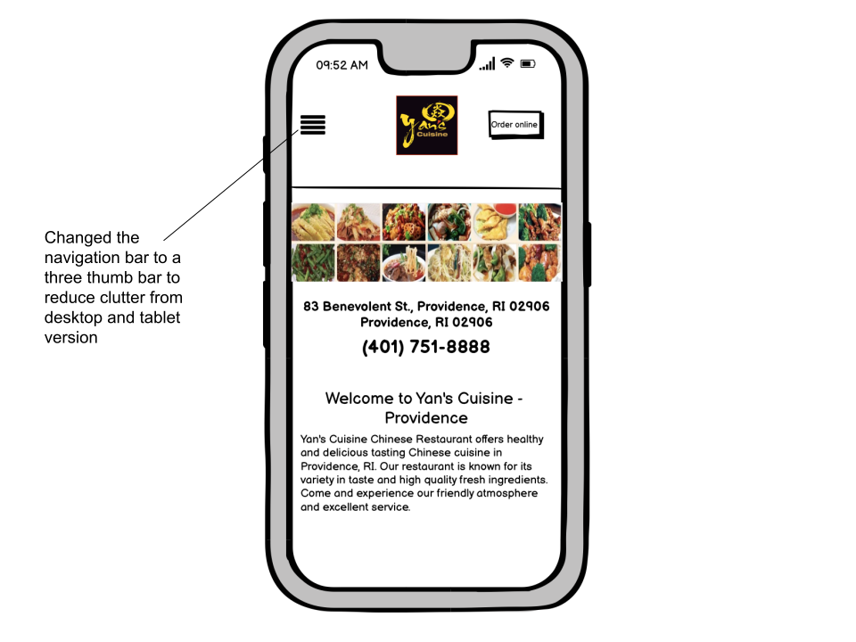
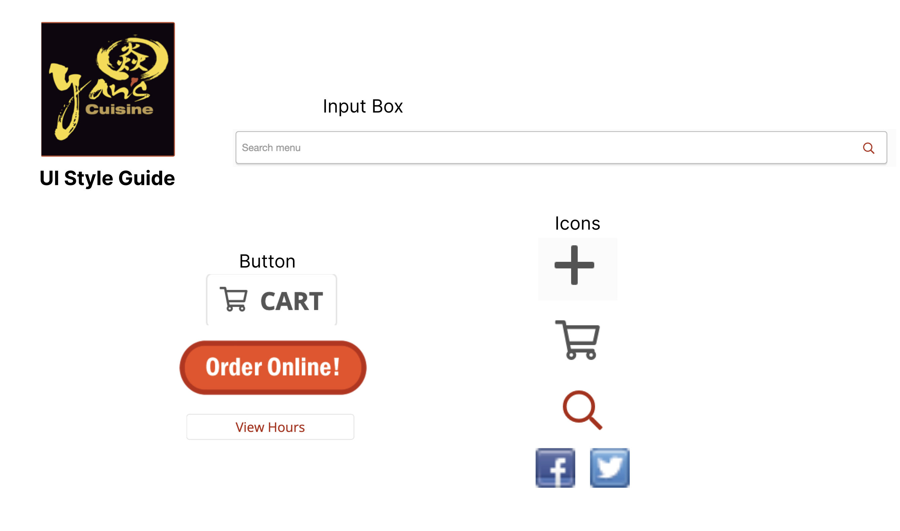
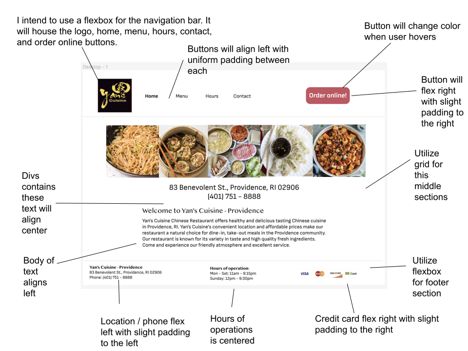
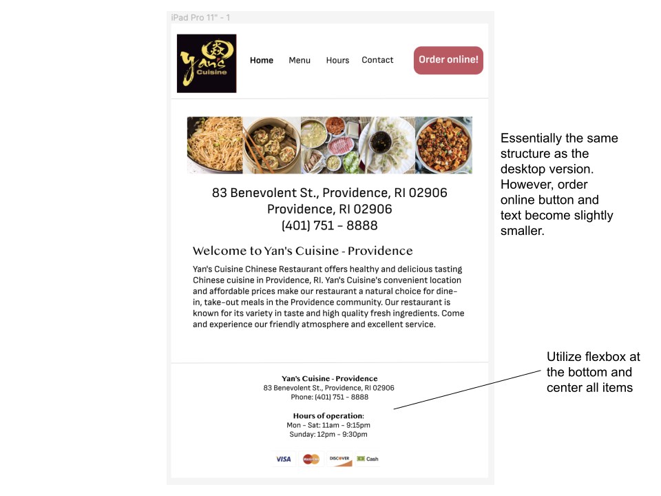
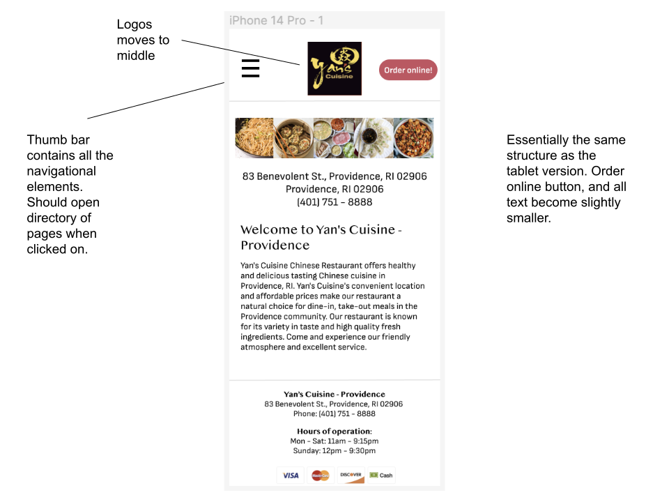

Responsive Redesign of Yan's Cuisine's Webpage
Why I chose this website
Yan's is one of the most famous restaurants among Brown University students. Despite its popularity, its website is very poorly designed. It is very cluttered and information is scattered all over the place. Therefore, I felt compelled to take action.
Link to Yan's Cuisine's website



Issues with site
Learnability
- Categories column on the left detracts from overall experience of user.
- The location and hours on the right detract from the home page.
Efficiency
- Throws a lot of information at the user at once which consequently overwhelms themes. Generates uncertainty about where to look.
- Many unnecessary pieces of text crowd the page at the top, bottom, left, and right.
Memorability
- With so much information given at once, it is hard to note any particular information. Though, the order online button is quite pronounced and urges the user to click on it.
Accessibility

The first step to testing the viability of the website is to put it through WebAIM WAVE.
Do you agree with the problems detected?
Yes, I agree with the various problems detected. For instance, on the buttons on the left have very small fonts which make readability difficult for the user. Additionally, certain text are actually links when they do not appear to be buttons or clickable. Certain redirect links are also redundant across the website which further clutters the page. Certain labels also appear to be quite redundant, thus undermining the overall simplicity of the page in guiding the user. Not to mention, the left sidebar of menu items and top right corner cart icon serve no purpose on this particular page and is only applicable in the subsequent “order” pages.
Visual redesign
Now that we have a good idea of some isses with the website, let's create some low-fidelity wireframes. Below are the desktop, tablet, and mobile wireframes in that order.



Let's also create the visual design style guide that will be the bookmark of elements we may replicate in our high-fidelity wireframe.

With the visual design style guide in our possession, we can create the high-fidelity wireframes. Below are the desktop, tablet, and mobile wireframes in that order.



Responsive redesign
Conclusion
There are many subtle nuances that go into creating an accessible website. It must not only cater towards the average individual but also those with certain disabilities and those using other forms of device screens.
Creating a responsive redesign of a website was, by far, the hardest task. Ensuring the website was still of a good quality screen whether it's a small cellphone or a large monitor screen, it was difficult to implement the sometimes subtle, but other time large, padding / size / configuration changes.
Thank you for taking time to read through this site!